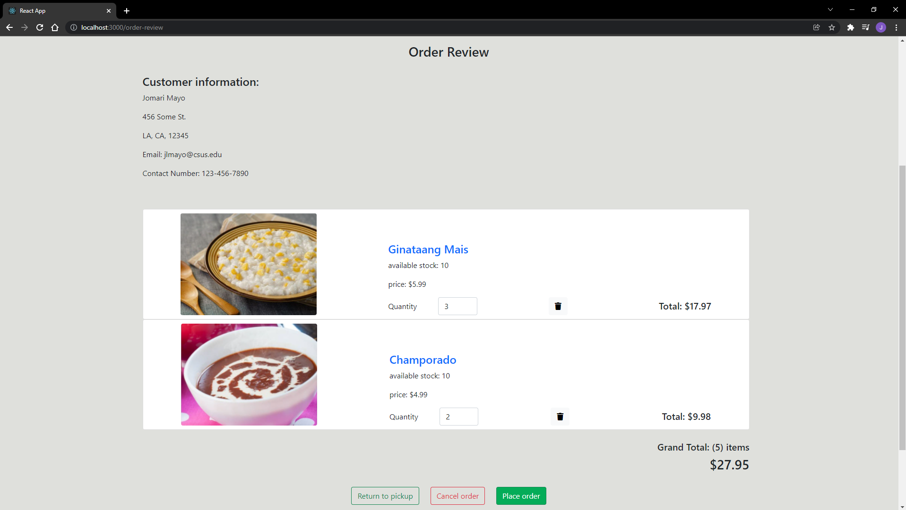

Bunso’s Kitchen Ecommerce
Web Application
Team Name: 6 Stack Apps
Team Members: RJ Cunanan, Ivince Pajarin, Jaime Rivera, Jomari Mayo, Carl Viloria, Duy Huynh
Client: Carl Perez
Adviser: Prof. Haiquan Chen
Meet the Team: 6 Stack Apps
 |
|
|
|
|
|
|
|
|
| Carl Viloria |
Duy Huynh |
Ivince Pajarin |
Jaime Rivera |
Jomari Mayo |
RJ Cunanan |
Background
Our client plans to have a business selling homemade fillipino dessert. The project goal is to help our client kick start his business by creating an eCommerce web application for him to provide his customers a more professional and business-like feeling when they order his desserts through the website.
Scope
The project scope will include: the owner of the business (our client Carl Perez), friends and family (his customers), the developers of the website (our team), and the project manager (Professor Yang).
Currently, our client does not have a website for his customers to order his desserts. We would like to solve that problem by creating him a website that his customers can use to order his desserts in an online format.
The goal of our project is to create him a safe, reliable, and working website so that he is able to kickstart his business and hopefully expand beyond.
Proposed Solution
The project goal is to provide our client with a digital platform where he can sell, advertise, and modify desserts seasonally to local customers. Our team will accomplish this by developing an ecommerce web application that includes both essential and unique features such as a user account system, admin account system, product listing, shopping cart, customer review, and Q&A chatbot just to name a few.
We plan to utilize several technologies during implementation for the project’s front end, back end, and database. In the front end, we will use: HTML, CSS, Bootstrap, Javascript, and React. For the back end and database, we will use: Node.js, Express, and MongoDB.
Highlights
With our project, we will be providing our client with a professional and more official method of making his dessert products accessible to targeted customers as opposed to more casual approaches such as utilizing social media to conduct sales. Additionally, our project will perform as an efficient and user-friendly ecommerce web application that fulfills the needs of both our client and the customers.
By utilizing the MERN stack architecture for our project’s development, our group will be able to accomplish our project’s goal while also giving us all the opportunity to explore a popular industry practice.
Prototypes
List of features/pages implemented in the final product:
- Feature 1: Account Creation
- Feature 2: Account Log-In
- Feature 3: Account Recovery
- Feature 4: Input validation
- Feature 5: Home/Menu page
- Feature 6: Cart System
- Feature 7: Ordering Process
- Feature 8: Order Canceling Process
- Feature 9: User Profile Page
- Feature 10: About Page
- Feature 11: Admin feature - Add new product
- Feature 12: Admin feature - Update existing product
- Feature 13: Admin feature - Check Sales
Final Product Screenshots:

Timeline
Sprint00 (February 1, 2021 - February 21, 2021)
- Secure Project Client
- Produce Project Proposal Document
- Produce Project Charter Document
Sprint01 (February 22, 2021 - March 7, 2021)
- Produce Business Event Table
- Produce Context Diagram
Sprint02 (March 8, 2021 - March 22, 2021)
- Create 3 possible Low-Fidelity Prototypes implementing basic features
- Low-Fidelity Prototype A
- Low-Fidelity Prototype B
- Low-Fidelity Prototype C
- Present Low-Fidelity Prototypes to Client
- Create single finalized Low-Fidelity Prototype utilizing Client’s feedback
Sprint03 (March 29, 2021 - April 12, 2021)
- Create High-Fidelity Prototype draft utilizing AdobeXD
- Present High-Fidelity Prototype to Client
- Revise High-Fidelity Prototype according to Client’s feedback
- Start creating the Product Backlog
- Create a plan for the rest of the semester
Sprint04 (April 12, 2021 - April 27, 2021)
- Identify any missing project features
- High-Fidelity Prototype Revision
- Continue work on Product Backlog
- Production Environment Research
- Prepare Project Presentation Slides
Sprint05 Part 1 (April 27, 2021 - May 11, 2021)
- Finalize High-Fidelity Prototype
- Finalize Product Backlog/Taskboard (Flyingdonut) Management
- Create Project Webpage
- Create Prototype Document
- Create Product Backlog Document
Sprint05 Part 2 (September 8, 2021 - September 22, 2021)
- Start creating the User Interface (UI) for each feature
Sprint06 (September 24, 2021 - October 6, 2021)
- Finish creating the UI
- Research into setting up the backend database and connecting it to the UI
- Node, Express, MongoDB, Mongoose
Sprint07 (October 8, 2021 - October 22, 2021)
- Begin creating and setting up the database
- Begin adding functionality for each UI component
- Research into React
Sprint08 (October 23, 2021 - November 5, 2021)
- Start transition of currently existing features into React
- Start connecting the backend database to the frontend UI
- Create cart system
- Create view of current orders
- Create profile page editing functionality
- Create Admin Account functionality
Sprint09 (November 7, 2021 - November 19, 2021)
- Finish transition of web app into React
- Finish connecting every feature that need access to the database
- Finish all functionality for features from previous sprint
- Conduct testing of finished features
- Add input validation where necessary
Sprint10 (November 21, 2021 - December 3, 2021)
- Finish conducting testing of each feature
- Clean-up and refine the UI/UX
- Finish adding and revising input validation for better security
Sprint11 (December 5, 2021 - December 15, 2021)
- Conduction Final Project Presentation
- Finish both the final product and the associated documentation
- Showcase Final Project
- Deliver final product to our client
Lessons Learned
What we learned in this class:
- Technologies: HTML, CSS, JavaScript, React, Node, Express, MongoDB
- Tools: Git, Command-Line Interface (CLI), GitLab, Visual Studio Code, MongoDB Compass
- Soft skills: Self-Motivation and Independence, Perseverance, Organization, and Efficiency
Insights/wisdom we learned and would like to share:
- The importance of constant communication, whether it be team meetings or a quick update message on Discord
- Usefulness of pair programming to get through roadblocks
- Always be ready to adapt to unforeseen changes